Вісім поколінь роду з берегів Кодими, з Гвоздавки на Любашівщині Одеської області: від Лазаря Дадула, що одружився в 1814 році, до наших днів. Тут усе, що вдалося знайти в архівах і базах про кожного з предків: хто вони, звідки, що з ними сталося.
Оновлено 29 вересня 2026
Що нового на сторінці
Книга 1911 р. (DGS 127453556) переглянута. У шлюбах: Яків Сергійович Корой підтверджений як поручник двох весіль; наречена Михайла Стратієвська (Мажарова) вийшла заміж у присутності Якова Короя; Антонія Корой (жовтень 1911); Нікантій, Феодор і Андрій Спінатії. Виправлено перелік мікрофільмів Гвоздавки.
Частина третя книги 1911 р. (смерті): знайдено смерть 2-річного сина Назарія Григоровича Стратієвського — Григорія, вихованця родини Горновських (20.03.1911).
Частину третю книги 1911 р. (смерті) переглянуто повністю (зобр. 519–543, весь рік): окрім Стратієвського Григорія, знайдено смерть 4-річного Іоанна, сина Ісаака Євстафійовича Рублі (25.05.1911). Інших цільових прізвищ (Пачесні, Корої, Дадули, Спінатії) серед 90 записів про смерть за рік не знайдено.
Частину першу книги 1911 р. (народження) переглянуто повністю (зобр. 447–503, весь рік): знайдено трьох нових Короїв — Варфоломія Ісидоровича (донька Євгенія, березень), Семена Никифоровича (син Гавриїл, серпень) і Трохима Феодоровича (син Стефан, серпень). Інших цільових прізвищ (Пачесні, Стратієвські, Дадули, Спінатії) серед ~160 записів про народження за рік не знайдено.
Частину другу книги 1911 р. (шлюби) переглянуто повністю (зобр. 505–517, січень–жовтень, 51 запис): знайдено заміжжя Ірини Іванівни Корой (21 січня, за Мощука) і Варвари Євсентіївни Дадул (26 січня, за Мазура) — обидві поки не пов'язані з відомими гілками родів.
Знайдено метод пошуку архівних книг: офіційний зведений каталог метричних книг ДАОО дає точні номери фонду/опису/справи, а пошук за ключовим словом «911_1_N» на FamilySearch напряму знаходить цифрову книгу. Так знайдено книги Гвоздавки за 1901 (мікрофільм 127453542) і 1905 (127453554) роки; підтверджено, що 1913 рік не оцифровано. Переглянуто шлюби обох років — Йосипа Сергійовича Короя й Макрини Ксенофонтівни серед них немає, але знайдено шлюб Семена Короя (26.10.1905).
У дереві з'явилися пунктирні картки імовірних родичів: Яків Сергійович Корой (брат прапрадіда Йосипа?), Петро Іванович Пачесний (брат прадіда Терентія?), Назарій Григорович Стратієвський (брат прадіда Андрія?) і Василиса Никифорівна Дадул (двоюрідна сестра прабабусі Анастасії?).
Знайдено метрику Андрія Сидоровича Дадула, брата прабабусі Анастасії (19.08.1910), скан додано. Розібрано гілки Короїв за хрещеними й поручителями: найімовірніший родич — Яків Сергійович, брат прапрадіда Йосипа.
Дописано родичів із метричних книг 1907–1912 років: імовірний брат Ісидора Никифор Дадул, ще три гілки Пачесних, інші Корої та Назарій Григорович Стратієвський.
Знайдено шлюб прапрадіда Івана Матвійовича Пачесного (Гвоздавка, 19.01.1909): дівоче прізвище прапрабабусі Любові Луківни — Рубля. У дереві з'явилися окремі картки Любові та її батька Луки Рублі.
Знайдено метричний запис про народження прадіда Терентія Пачесного (Гвоздавка, 31.05.1912): батьки Іван Матвійович Пачесний і Любов Луківна. У дереві замість версії «Гаврило» тепер Матвій Пачесний.
Новий документ про прадіда Терентія Пачесного: дружина Віра Григорівна, оточення в жовтні 1941, призов 1.04.1944. Знайшов ChatGPT, перевірено.
Уточнено: мати діда Івана — Калина Бабенко; «Калина» — домашнє ім'я, за документом вона, імовірно, Агрипина Устинівна; тоді її батько — Устин Бабенко.
Дерево розтягнуто, щоб написи не накладалися; у картках з'явилася зелена галочка — «є документ».
Знайдено метричний запис про народження прадіда Тимофія Короя (Гвоздавка, 17.02.1910): батьки Йосип Сергійович Корой і Макрина Ксенофонтівна; у дереві з'явився Сергій Корой.
Додано повний аркуш метричної книги 1907 року із записом про народження прабабусі Анастасії Дадул. Сестру тата Надію Перхун у дереві переставлено ліворуч, щоб тато з мамою стояли поруч.
У розділ документів додано метричні записи 1835 і 1828 років про дітей Лазаря Дадула.
Знайдено метричний запис про народження прабабусі Анастасії (Гвоздавка, 25.12.1907 ст.ст.): батьки Ісидор Данилович Дадул і Васса Никифорівна. Ланцюжок Данило → Ісидор → Анастасія підтверджено документами.
Уточнено формулювання: зв'язки Лазар → Данило → Ісидор та Калина = Агрипина позначено як версії; книги фонду 911 за 1907–1908 роки знайдено на FamilySearch (перевірив ChatGPT).
Восьме коліно: Лазар Іванович Дадул — шлюби 1814 і 1827, четверо дітей 1818–1835, книга села Гвоздавки; його батько Іван Дадул.
FamilySearch: знайдено оцифровану метричну книгу Гвоздавки Другої за 1872 рік із записами про дітей Данила Лазаровича Дадула та Олени Феодосіївни. У дереві сьоме коліно — Лазар Дадул.
Додано готовий текст запиту до Держархіву Одеської області (розділ «Де лежать наступні покоління»).
У дереві шостий ряд: прапрапрадід Данило Дадул (за по батькові Ісидора) та, як версія, Гаврило Пачесний.
Брат прабабусі Анастасії — Андрій Дадул, каліка, служив охоронцем у румунів, розстріляний як зрадник; її батька Сидора розстріляли чекісти за саботаж колгоспу. В архіві СБУ по Одещині є справа 1933 року на Ісидора Даниловича Дадула (1881) — імовірно, це він.
Прабабуся Анастасія Дадул: 07.01.1908 – 19.12.1991; п'ятеро дітей — Марія, Михайло, Андрій, Микола, Ольга; після війни виростила ще п'ятьох дітей розстріляного брата.
Виправлено написання прізвища: Спінатій.
Родина підтвердила: Терентій Іванович Пачесний — прадід, батько діда Олексія.
Розділ «Усі знайдені документи»: дев'ять сканів з ЦАМО.
Мати діда Олексія — Віра Пачесна.
Роки народження дідів: Олексій Терентійович та Іван Федотович — обидва 1938.
Знайдено прадіда Терентія Івановича Пачесного (1912): медаль «За відвагу», повернувся з війни.
Знайдено Степана Федотовича Спінатія (1924), брата діда Івана: зник безвісти в липні 1944; у документі названо матір — Анастасію Устинівну.
Нагородний лист прадіда Андрія Стратієвського: орден Слави за бій на Шпрее 20.04.1945.
Донесення 1945 року з іменем прабабусі Анастасії Сидорівни (Дадул).
Стаття про рід Пачесних з хутора Пачислаго (Володимирівка).
татова лініямамина лініядокумент знайдено в архівізі слів родиниверсія припущення, не доведено
Дерево
Чоловік і дружина стоять поруч, кільце між ними — шлюб. Зелена галочка в кутку картки — на цю людину є документ (метрика, військовий список чи нагородний лист). Пунктирна картка зі знаком питання — імовірний родич: людина є в документах, але спорідненість ще не доведена; під ім'ям написано, ким вона, найімовірніше, вам доводиться. Лінія від кільця вниз веде до дітей: прямий предок — у повній картці, його брати й сестри — у сусідній світлій. Натисніть на ім'я, щоб перейти до історії. На вузькому екрані дерево гортається вбік.
Мамина лінія
Корої, Дадули, Спінатії
Прадід
17.02.1910 – 25.02.1945
документ
Тимофій Йосипович Корой
Народився 17 лютого 1910 року за старим стилем (2 березня за новим) у Гвоздавці, у родині гвоздавського селянина Йосипа Сергійовича Короя та Макрини Ксенофонтівни; хрещений 21 лютого в Архангело-Михайлівській церкві, запис № 19 (див. статтю про батьків). У березні 1941 року в нього й Анастасії народилася донька Ольга. За три місяці почалася війна, а в серпні село зайняли німецькі й румунські війська. У 1941 році до армії його, судячи з документів, не взяли: від Гвоздавки фронт відкотився швидше, ніж встигли мобілізувати.
Майже три роки родина жила під румунською окупацією. Наприкінці березня 1944 року район звільнили, і вже 20 квітня 1944 Тимофія призвав Любашівський райвійськкомат. Спершу він потрапив до 214-го армійського запасного полку 5-ї гвардійської армії, влітку 1944-го його перевели в 228-й гвардійський стрілецький полк 78-ї гвардійської дивізії.
Ця армія пройшла Віслу й Одер. У лютому 1945 року вона тримала фронт у Сілезії, на південь від оточеного Бреслау, біля гори Зобтен. Там 25 лютого 1945 року червоноармієць Корой загинув. До Перемоги лишалося два з половиною місяці. Вдома лишилися дружина й п'ятеро дітей; наймолодшій, Ользі, було без місяця чотири роки.
1910
народився, с. Гвоздавка 2, Любашівський район
до 1929
одружився з Анастасією Дадул; діти Марія (1930), Михайло (1933), Андрій (1935), Микола (1938), Ольга (1941)
штаб 78 гв. стрілецької дивізії / 228 гв. стрілецький полк, 1-й Український фронт
25.02.1945
убитий у бою
поховання
спершу на східній околиці с. Альбрехтсдорф повіту Бреслау, за іншим документом у с. Міхельсдорф. Тепер це Ольбрахтовіце, гміна Собутка, біля Вроцлава, Польща
Корой Тимофей Иосифович… 1910… Одесская обл., Любашевский р-н, с. Гвоздавка 2… Убит 25.2.45… Ближайшие родственники: жена Корой Анастасия Сидоровна, с. Гвоздавка 2.
Іменний список безповоротних втрат 228 гв. сп, 27.02.1945, рядок 28
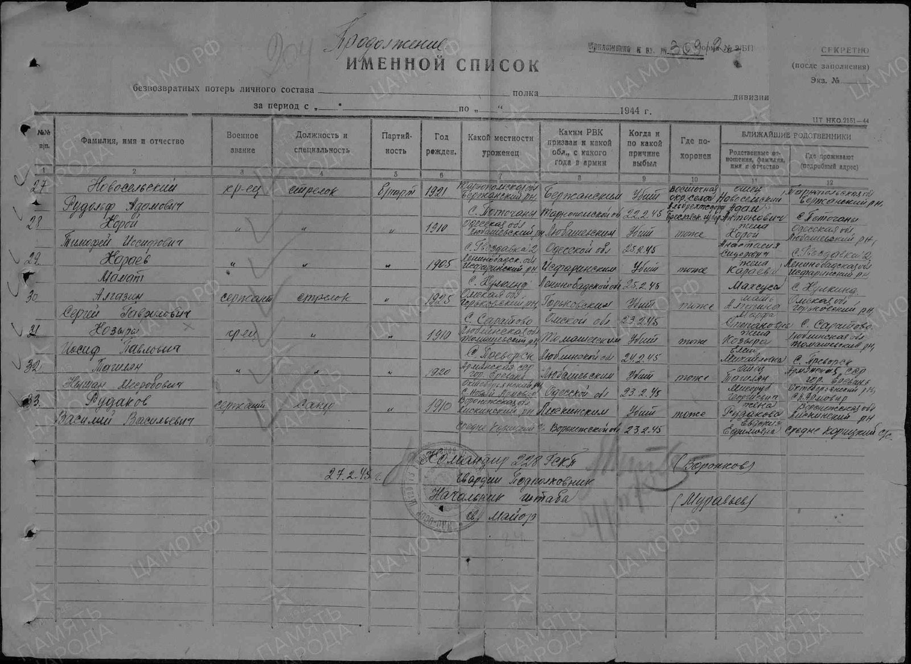
Донесення, з якого стало відомо ім'я прабабусі. Прадід у рядку 28. ЦАМО, ф. 58, оп. 18003, спр. 340.
Народилася 10 грудня 1907 року за старим стилем і була хрещена 25 грудня, що за новим стилем дає 7 січня 1908 — дату, яку пам'ятає родина (див. запис у статті про батьків). Померла 19 грудня 1991-го, у 83 роки. Її ім'я й по батькові підтверджує й донесення 1945 року: у графі «ближайшие родственники» стоїть «жена Корой Анастасия Сидоровна, с. Гвоздавка 2». На цю адресу прийшла похоронка.
З Тимофієм Короєм вона мала п'ятеро дітей: Марію (1930), Михайла (1933), Андрія (1935), Миколу (1938) та Ольгу (1941). Отже, одружилися вони не пізніше 1929 року, коли Анастасії був 21 рік, а Тимофію 19.
Усю окупацію 1941–1944 років вона прожила в Гвоздавці з п'ятьма дітьми, найменшій із яких було кілька місяців. Поруч, на околиці села, восени 1941 року окупанти влаштували табір для євреїв, у якому загинуло близько п'яти тисяч людей. У квітні 1944-го чоловіка забрали на фронт, а в лютому 1945-го вона овдовіла у 37 років, з дітьми від чотирьох до п'ятнадцяти.
Після війни вона ще й допомогла виростити п'ятьох дітей свого брата Андрія. Андрій Сидорович Дадул був калікою, тож до армії його не брали; за окупації він служив охоронцем у румунів, а після повернення радянської влади його розстріляли як зрадника. П'ятеро його дітей лишилися сиротами, і Анастасія, сама вдова з п'ятьма дітьми, ростила їх разом зі своїми. У Червоній армії Андрій не значиться, що з цим узгоджується. Його справа, як і справа батька, має зберігатися в архіві СБУ; але зрадників не реабілітовували, тому в переліку реабілітованих його немає. Родина каже також, що батька Анастасії, Сидора, розстріляли чекісти за те, що він саботував колгосп і не віддав худобу. Імовірно, це 1933 рік: у переліку справ архіву СБУ по Одещині є справа 1933 року на Дадула Ісидора Даниловича, 1881 р.н. (див. Сидір Дадул).
Знайдено запис про народження Андрія. Метрична книга Гвоздавки за 1910 рік, частина перша, запис № 84: Андрій народився 19 серпня, хрещений 5 вересня 1910 року за старим стилем (1 і 18 вересня за новим). Батьки: «Гвоздавскій крестьянинъ Исидоръ Даниловъ Дадулъ и законная жена его Васса Никифорова, православные» — ті самі, що й в Анастасії, тож Андрій — її рідний молодший брат, на два з половиною роки молодший. Хрещені: особистий почесний громадянин Григорій Іванович Охлоповський і Параскева, дочка Стефана Митрофанського. Хрестив священник Михаїл Бортовський.
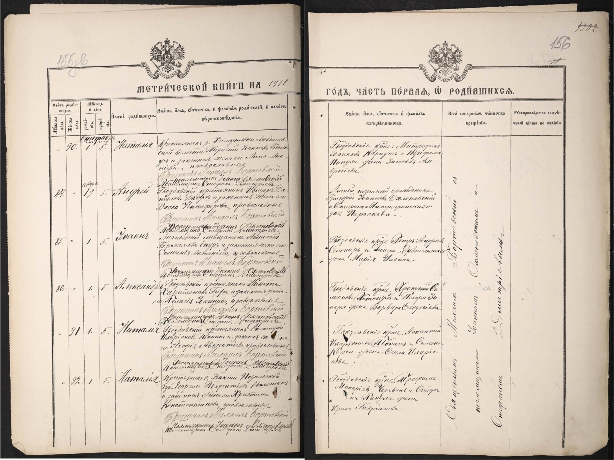
Метрична книга Гвоздавки 1910 року, розворот із записами № 84–92. Андрій — другий зверху: батьки Ісидор Данилович Дадул і Васса Никифорівна; праворуч, другий запис, хрещені. FamilySearch, мікрофільм 127941304, зобр. 199–200.
FamilySearch, мікрофільм 127941304 (Гвоздавка, 1910), зобр. 199–200, запис № 84; ДАОО, ф. 911, оп. 1, спр. 17, арк. 155 зв.–156.
Прізвище Дадул у Гвоздавці відоме з 1814 року; окремі його носії є й у військових базах, обидва без місця народження:
Дадул Леонтій Іларіонович, 1905 р.н., гвардії червоноармієць, хлібопек 665-ї польової хлібопекарні 81-ї гв. дивізії, у армії з 3.04.1944, медаль «За бойові заслуги». Призваний польовим військкоматом, як і місцеві чоловіки після звільнення. версія міг бути її братом або дядьком.
Дадул Степан, помер 19.10.1918, похований на євангелічному цвинтарі в Нойруппіні, Німеччина. Судячи з дати, це, мабуть, полонений Першої світової. версія зв'язок невідомий.
Близьке молдавське прізвище Додул дуже поширене в сусідніх селах: Колбасна й Гандрабури, на тому ж березі Кодими. Серед них є Сидоровичі й Ісидоровичі (Ісидор = Сидір). Чи це та сама родина, покажуть тільки документи.
Знайдено запис про народження Тимофія. Метрична книга Архангело-Михайлівської церкви Гвоздавки за 1910 рік, частина перша, запис № 19: народився 17 лютого, хрещений 21 лютого 1910 року за старим стилем. Батьки: «Гвоздавскій крестьянинъ Іосифъ Сергіевъ Корой и законная жена его Макрина Ксенофонтова, оба православные». Хрещені: гвоздавські селяни Терентій Іванович Диденкул та Агрипина Антонівна, дружина Наума Гордуза. Хрестив той самий священник Михаїл Бортовський із псаломщиками Іоанном Охлоповським і Стефаном Дмитрієвим, що через три роки до того хрестив Анастасію Дадул, майбутню дружину Тимофія.
Отже, ваш прапрадід — Йосип Сергійович, а його батько, прапрапрадід, — Сергій Корой, народжений приблизно в 1850–60-х. Прапрабабуся Макрина Ксенофонтівна; її дівоче прізвище ще не відоме, його дасть запис про шлюб Йосипа й Макрини (до 1910 року, імовірно 1900-ті) у тих самих книгах Гвоздавки. Прізвище Корой схоже на молдавське Coroi: жителів правобережної Гвоздавки здавна називають «молдаванами», бо село заснували переселенці з Молдавії наприкінці XVIII століття.
Знайшов ChatGPT, перевірено за оригіналом: FamilySearch, мікрофільм 127941304, зобр. 153–154, запис № 19. У першому переказі ChatGPT назвав матір Марфою і дату 12 лютого; в оригіналі чітко «Макрина» та «17».
Інші Корої в книгах Гвоздавки. Прізвище в селі не одиноке, і як саме ці люди пов'язані з Йосипом Сергійовичем, поки невідомо:
4 червня 1907 — шлюб Терентія Ілліча Короя, 21 рік, і Параскеви Филимонівни Гордуз, 18 (книга 1907, № 42).
15 січня 1908 — шлюб Якова Терентійовича Короя, 20, і Дарії Федорівни Іваненко, 18 (книга 1908, № 1). У лютому 1912-го в них народилася дочка Анастасія.
14 січня 1909 — шлюб Андрія Івановича Карауша й Акилини Арсенівни Корой, 18; одним із поручителів був Іван Матвійович Пачесний (книга 1909, № 7).
3 жовтня 1911 — шлюб катеринославського селянина (жених не з Гвоздавки) й Антонії Корой, 26, гвоздавської (книга 1911, зобр. 516, № 43). Батько Антонії поки не встановлений, тобто до якої гілки Короїв вона належала — невідомо.
20 січня 1910 — шлюб Павла Арсенійовича Короя, 22, і Євфросинії Данилівни Бойченко, 19 (книга 1910, № 20); Павло й Акилина, мабуть, брат і сестра, діти Арсенія Короя.
26 жовтня 1905 року — шлюб Семена Короя (по батькові нерозбірливо) з Марією [Стеценовою?] (книга 1905, частина друга, зобр. 156, № 33).
Народження в родинах Короїв 1911 року (книга 1911, частина перша): 26 березня — дочка Євгенія в Варфоломія Ісидоровича Короя й Варвари Тодоракової (зобр. 471, № 34) — по батькові збігається з відомим уже Прокопієм Ісидоровичем, тож вони, найімовірніше, брати, сини Ісидора Короя; 2 серпня — син Гавриїл у Семена Никифоровича Короя й Софії Іларіонівни (зобр. 487, № 83); 14 серпня — син Стефан у Трохима Феодоровича Короя й Тарасини Тимофіївни (зобр. 489, № 91). Як ці троє пов'язані між собою і з Сергійовичами — поки не встановлено.
Хрещені й поручителі: що вони кажуть про родину. Щоб зрозуміти, хто з Короїв кому родич, я переглянула всі хрестини Гвоздавки за 1910 і 1912 роки, шлюби 1907–1910 років і виписала, де Корої стоять батьками, хрещеними або поручителями. Картина така:
Сергійовичі — ваша гілка. Окрім прапрадіда Йосипа Сергійовича, у книгах є Яків Сергійович Корой: восени 1910 року він хрестив дитину разом з Іриною Панкратіївною, дружиною Федора Дубинянського (книга 1910, зобр. 210), а навесні 1912-го — разом із дружиною Феодосія Гордуза (книга 1912, зобр. 261). У лютому 1911 він двічі виступив поручителем на шлюбах у Гвоздавці (книга 1911, зобр. 509–510, записи № 21 і № 22): у другому випадку наречена — Михайла Мажарова Стратієвська, і його підпис поручителя підтверджує, що родини Короїв і Стратієвських у Гвоздавці добре одне одного знали. За рідкісним у селі по батькові він, найімовірніше, рідний брат Йосипа, тобто брат прадіда Тимофія по батькові — його дядько. версія
Яковичі. Ілля Якович, Арсеній Якович та Іван Якович Корої — брати: на хрестинах Антонія, сина Арсенія Яковича й Пелагії Олексіївни, у січні 1910 року хрещеним був Іван Якович (книга 1910, зобр. 145–146), а на весіллі Терентія Ілліча Короя в 1907 році поручителем від нареченого був Ілля Якович — мабуть, його батько. Діти Арсенія: Павло (шлюб 1910), Акилина (шлюб 1909), Васса і Віра Арсенівни. У 1912 році в Іллі Яковича й Лукії Миколаївни народився син Мартиніан (зобр. 262).
Інші Корої, чий зв'язок не видно: Яків Терентійович (шлюб 1908), Михайло Васильович і Марія Трохимівна (дочка Ірина, 1910), Прокопій Афанасійович, Прокопій Ісидорович, Семен Тимофійович, Федір. Також 21 січня 1911 року гвоздавська селянка Ірина Іванівна Корой, 18 років, вийшла заміж за Григорія Іларіоновича Мощука (книга 1911, частина друга, зобр. 507, № 11).
Прямого зв'язку між Сергійовичами та Яковичами в цих записах немає: вони не хрестили дітей одні одних і не ручалися на весіллях. Хрещені Тимофія 1910 року теж не Корої, а Диденкул і дружина Гордуза. Тож Павло Арсенійович, Акилина й інші Яковичі — поки однофамільці або далека рідня; розв'язати це можуть лише метрики 1860–1880-х років, коли народжувалися Сергій і Яків Корої. Найближчий до вас кандидат — Яків Сергійович.
Архівна адреса запису: Держархів Одеської області, ф. 911, оп. 1, спр. 17 (Гвоздавка, 1910).
Інші Корої з Гвоздавки у військових документах
Хто
Рік
Доля
Корой Конон Михайлович
1903
призваний у липні 1941, зник безвісти у вересні 1941
Корой Савва Васильович
1923
призваний у квітні 1944; медаль «За відвагу», вижив
Корой Володимир Калинкович
1923
призваний в Одесі у 1941, зник безвісти
Прапрадід
1881 – розстріляний, бл. 1933
документзі слів родини
Ісидор (Сидір) Данилович Дадул і Васса Никифорівна
Знайдено запис про народження Анастасії. Метрична книга Архангело-Михайлівської церкви Гвоздавки за 1907 рік (ДАОО, ф. 911, оп. 1, спр. 13), частина перша, запис № 144: народилася 10 грудня, хрещена 25 грудня 1907 року за старим стилем, тобто 7 січня 1908 року за новим, саме та дата, яку пам'ятає родина. Батьки: «Гвоздавскій крестьянинъ Исидоръ Даниловъ Дадулъ и законная жена его Васса Никифорова, оба православные». Хрещені: гвоздавські селяни Трофим Григорович Головко та Агафія Євдокіївна, дружина Стефана Мищука. Хрестив священник Михаїл Бортовський із псаломщиками Іоанном Охлоповським і Стефаном Дмитрієвим.
Отже, батько Анастасії — Ісидор Данилович, той самий, що в переліку справ архіву СБУ (1881 р.н., справа 1933 року), а її мати, ваша прапрабабуся, — Васса Никифорівна; її дівоче прізвище ще не відоме.
За словами родини, його розстріляли чекісти за саботаж колгоспу: він не захотів віддавати худобу. Це роки колективізації, 1930–1933. У переліку справ колишнього архіву КДБ по Одеській області (Держархів Одеської області, ф. Р-8065, оп. 2, № 7663) є справа 18123-п на Дадула Ісидора Даниловича, 1881 року народження, документи 1933–1989 років, 18 аркушів, у розділі «прекращенные дела». Ісидор і Сидір — одне ім'я, 1881 рік добре пасує батькові Анастасії 1908 року, а 1933-й — це саме розпал колективізації й Голодомору, коли за «саботаж» і відмову здати худобу арештовували масово. Тепер, коли метрика 1907 року назвала батька Анастасії Ісидором Даниловичем, сумнівів майже не лишилося. Отже, то його батько, ваш прапрапрадід, — Данило Дадул, народжений приблизно в 1840–1860-х роках; це найдавніший відомий предок роду. Справу можна замовити в Одесі; у ній будуть село, склад сім'ї та обставини арешту.
У «Памяти народа» є ще Додул Сидір Єфремович, 1894 р.н., призваний Великоврадіївським РВК у квітні 1944-го, 6-та гв. повітряно-десантна дивізія, двічі нагороджений медаллю «За відвагу». Для батька Анастасії він замолодий, але може бути родичем.
Відомо двоє дітей Ісидора й Васси: Анастасія (1907) та Андрій (19.08.1910, запис № 84 книги 1910 року). У січні 1912 року Васса Никифорівна сама стала хрещеною матір'ю чужої дитини, тобто тримала її на хрестинах (а не хрестилася дорослою): у записі народження Гвоздавки серед хрещених стоїть «Исидора Данилова Дадула жена Васса Никифорова» (книга 1912, зобр. 247).
Імовірний брат Ісидора. У метричній книзі Гвоздавки за 1912 рік, запис № 35: 1 квітня народилася, 8 квітня хрещена Василиса, дочка гвоздавського селянина Никифора Даниловича Дадула і Марфи Яковлівни. Той самий рідкісний рід, те саме по батькові й те саме село — отже, Никифор, найімовірніше, рідний брат Ісидора, а Василиса — двоюрідна сестра прабабусі Анастасії. версія
Ще одна гілка Дадулів. У метричній книзі Гвоздавки за 1911 рік (частина друга, шлюби, зобр. 507, № 14): 26 січня одружилися гвоздавський селянин Петро Васильович Мазур, 24 роки, і Варвара Євсентіївна Дадул, 19 років. По батькові «Євсентіївна» не збігається ні з Ісидором, ні з Никифором Даниловичами — отже, це, найімовірніше, ще одна, поки не пов'язана гілка роду: її батько, гвоздавський селянин Євсентій (Євстафій) Дадул.
FamilySearch, мікрофільм 127941303, зобр. 272.
8-ме коліно · версія
бл. 1790-х – після 1835
документверсія
Лазар Іванович Дадул
Як читати цю сторінку. Сам Лазар, його дружини й діти — документ, як і те, що Данило Лазарович — дід Анастасії. Не підтверджено записом лише одне: що Данило Лазарович — син саме цього Лазаря. Тому два верхні ряди дерева підписані зі знаком питання.
Найдавніший предок, якого видно в документах. У проіндексованих одеських метричних книгах є його два шлюби і четверо дітей: 18 січня 1814 року Лазар Дадул одружився з Євдокією (діти Фотина, 1818, і Гавриїл, 1824–1828), а 13 лютого 1827, овдовівши, узяв шлюб із Тетяною Матвіївною Бондарченко; від неї народилися Терентій (26.04.1828) та Іов (6.05.1835). У записі про Іова батька названо повністю: «Лазяр Іоаннов Дадул», тобто Лазар Іванович, а його батько — Іван Дадул, дев'яте коліно, народжений приблизно в 1760-х.
Я прочитала сам аркуш 1835 року: це книга села Гвоздавки, яка тоді належала Балтському повіту (мікрофільм 15 парафій Ананьївщини, зображення 317 із 333). Отже, Дадули жили в Гвоздавці щонайменше з 1814 року, за два покоління до Анастасії.
версія Що Данило Лазарович, який у 1872-му хрестив дочку в тій самій церкві, — син саме цього Лазаря, доводить лише збіг рідкісного імені по батькові, села й часу: Данило мав народитися між 1828 і 1845 роками, а книги Гвоздавки за ці роки в базі ще не проіндексовані. Запис про його хрещення в мікрофільмах серії має бути; я його шукатиму.
Джерела: FamilySearch, «Ukraine, Odesa Church Books, 1780-1898»: Іов Дадул, 1835 (мікрофільм 005685463, зобр. 317); Терентій Дадул, 1828; записи про шлюби Лазаря 1814 і 1827 та дітей Фотину й Гавриїла.
Прапрапрадід
бл. 1840-х – ?
документ
Данило Лазарович Дадул і Олена Феодосіївна
У метричній книзі Гвоздавки Другої за 1872 рік є два записи про дітей гвоздавського селянина Данила Лазаровича Дадула та його законної дружини Олени Феодосіївни: 22 вересня 1872 року народилася дочка Фекла (хрещена 27 вересня, запис № 53), а 28 травня того ж року помер однорічний син Кирило. Книгу оцифровано на FamilySearch з фондів Держархіву Одеської області (зображення 63 зі 117).
Що Данило — дід Анастасії, тепер підтверджено з двох боків: метрика 1907 року називає її батька Ісидором Даниловичем, а в Гвоздавці за дев'ять років до народження Ісидора хрестив дітей лише один Данило Дадул — Лазарович. Запис про хрещення самого Ісидора (1881) ще належить знайти. Батько Данила — Лазар Іванович Дадул, сьоме коліно, про якого є окрема сторінка вище. Прізвище Дадул (молдавською Додул) поширене в молдавських селах Придністров'я, а Гвоздавку Другу заснували саме молдавські переселенці.
У воєнних базах є ще два Даниловичі Дадули, Іван (1919) та Яків (1917) з Чобручів; за віком вони не брати Ісидора, а радше внуки іншого Данила, тож до нашого не ведуть.
Підтвердити зв'язок може запис про хрещення Ісидора в метричній книзі Гвоздавки за 1881 рік (ф. 37, оп. 10, спр. 27) — якщо і її оцифровано, ми прочитаємо його самі; а також справа 18123-п в Одесі й сповідні розписи середини XIX століття, де Данило був би записаний дитиною в родині Лазаря.
Джерело: FamilySearch, колекція «Ukraine, Odesa Church Books, 1780-1898», запис Фекла Дадул; мікрофільм «Бобрик Другий | Гвоздавка Друга | Ясеново Второе, 1872». Потрібен безкоштовний акаунт FamilySearch.
Бабуся
21.03.1941 – 31.12.2017
документ
Ольга Тимофіївна Спінатій, дівоче Корой
Народилася 21 березня 1941 року в Гвоздавці Другій, за три місяці до війни. Перші три роки її життя припали на румунську окупацію: село входило до губернаторства «Трансністрія», Голтського повіту. Батька вона майже не могла пам'ятати: він пішов на фронт, коли їй було три роки, і загинув, коли їй ще не виповнилося чотирьох.
Наймолодша з п'ятьох дітей Тимофія й Анастасії; її брати й сестра — Марія (1930), Михайло (1933), Андрій (1935), Микола (1938). Виросла з матір'ю, вийшла заміж за Івана Спінатія, народила доньку Надію. Прожила все життя в рідному селі й померла там 31 грудня 2017 року, у 76 років.
Джерело: свідоцтво про смерть (видане Любашівським відділом ДРАЦС, 03.01.2018).
Дід
1938
зі слів родини
Іван Федотович Спінатій
Народився в 1938 році, того ж року, що й другий дід, Олексій. Чоловік Ольги Тимофіївни, батько Надії. Син Федота Спінатія; мати, за словами родини, — Калина Бабенко. Родом «з хуторів» під Ананьєвом. У сім'ї було десятеро дітей; Голодомор 1932–1933 років пережили четверо: Степан, Настуня, Міша та Іван.
Степана вдалося знайти в документах, див. Федот Спінатій. У метричній книзі шлюбів Гвоздавки за 1911 рік (запис № 10, 21 січня) є Нікантій Семенович Спінатій: він одружився першим шлюбом. Поручителями виступили Феодор Дмитрович Спінатій і Андрій Дмитрович Спінатій — ще два представники роду в Гвоздавці.
Ще один Спінатій з Гвоздавки-2, Сергій Іванович (1921), воював у тому самому 233-му гвардійському артполку, що й прадід Андрій Стратієвський: обидва нагороджені одним наказом № 9/н від 15.10.1944, Сергій — медаллю «За відвагу». У 1986-му він отримав орден Вітчизняної війни I ступеня. Чи родич він Івану — невідомо.
Прізвище Спінатій у світі майже унікальне. Воно зустрічається лише на Любашівщині та поруч, у Котовському районі (с. Липецьке).
Спінатії з Гвоздавки у військових документах
Хто
Рік
Доля
Спінатій Степан Федотович
1924
брат діда Івана; зник безвісти в липні 1944 (див. нижче)
Спінатій Сергій Іванович
1921
233 гв. артполк, медаль «За відвагу» 15.10.1944, вижив
Спінатій Андрій Іванович
1919
призваний у січні 1940, останній лист у липні 1941, зник безвісти; дружина Ксенія Михайлівна, Гвоздавка 2. Можливо, брат Сергія версія
Прадід
роки невідомі
документзі слів родини
Федот Спінатій
Батько діда Івана, відомий з його по батькові. У воєнних базах не значиться, тобто на фронт не потрапив. Жив на хуторах під Ананьєвом, потім, судячи з документів сина, у Гвоздавці Другій. Діти народжувалися щонайменше з 1924 (Степан) по 1938 рік (Іван); з десятьох після Голодомору лишилося четверо.
Один із них, Степан Федотович Спінатій, 1924 року народження, є в списку Любашівського райвійськкомату від 15 вересня 1951 року. Його призвали польовим військкоматом у березні 1944-го, одразу після звільнення, коли йому було 19. Стрілець, безпартійний, 2-й Український фронт, 7-ма гвардійська армія. Зник безвісти в липні 1944 року. Це той самий Степан, якого родина пам'ятає серед уцілілих після Голодомору: він пережив голод, але не пережив війни.
Спинатий Степан Федотович, рядовой, стрелок, б/п, 1924, с. Гвоздавка 2 Любашевского р-на… призван полевым военкоматом 03.1944… пропал без вести 07.1944… мать Спинатий Агрипина Устиновна, Одесской обл. Любашевского р-на с. Гвоздавка 2.
Список Любашівського РВК, 15.09.1951, рядок 5. ЦАМО, ф. 58, оп. 977524, спр. 260
У графі «родичі» матір'ю Степана записано Агрипину (Горпину) Устинівну Спінатій; почерк нерозбірливий, ім'я прочитано двома незалежними читачами однаково. Родина знала матір Івана як Калину, але каже, що це могло бути домашнє ім'я. Отже, Агрипина Устинівна і Калина — найімовірніше, одна людина, а Степан — рідний брат Івана.
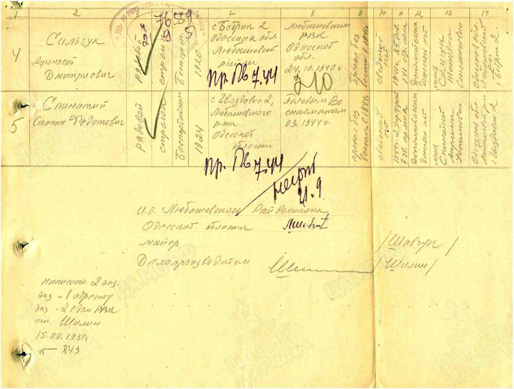
Список тих, кого можна вважати зниклими безвісти, складений райвійськкоматом у 1951 році. Степан у рядку 5.
Калина Бабенко, за документом — Агрипина Устинівна
Мати діда Івана Спінатія, за словами родини. «Калина» — так її звали вдома; офіційне ім'я родина не пам'ятає. У списку 1951 року матір'ю Степана Федотовича записано Агрипину Устинівну Спінатій з Гвоздавки Другої. Документ каже лише це: хто мати Степана. Що Агрипина і Калина — одна людина, що вона з дому Бабенко і що її батько — Устин Бабенко, — усе це припущення, які має підтвердити запис про шлюб Федота. версія
У Гвоздавці Другій жила також родина Бабенків, братів Опанасовичів. Родина впізнає в них своїх; якщо Калина — Устинівна, це радше її двоюрідні брати:
Степан Опанасович, 1903, сержант 1292-го полку 113-ї дивізії, зник безвісти 23.04.1943 під Чугуєвом на Харківщині
Аким Опанасович, 1908, призваний 26.04.1944, 13-та гвардійська дивізія; загинув 22.02.1945 у Німеччині, за три дні до Тимофія Короя. Дружина Ірина Артемівна
Андрій Опанасович, 1921, був у полоні до 1944-го; помер від ран 1.10.1944, похований у Кишиневі
Іван Опанасович (у документі «Бобенко»), 1925, 107-ма гвардійська дивізія; загинув 20.04.1945 в Австрії
Хто саме вони Калині, рідні чи двоюрідні брати, покаже її по батькові в записі про шлюб із Федотом або в метричній книзі Гвоздавки.
Аким і Тимофій Корой пішли на фронт з одного села з різницею в шість днів і загинули в Сілезії з різницею в три дні: 22 і 25 лютого 1945 року.
Мама
1961
зі слів родини
Надія Іванівна Пачесна, дівоче Спінатій
Народилася в 1961 році в Гвоздавці Другій. У 1983 році там же вийшла заміж за Анатолія Пачесного.
Татова лінія
Пачесні, Стратієвські, Попеску
Прадід
1915 – після 1986
документзі слів родини
Андрій Григорович Стратієвський
Народився в 1915 році. Воював двічі, і обидва рази вижив.
Ще до великої війни, у 1938 році, 23-річним червоноармійцем брав участь у боях біля озера Хасан на Далекому Сході, проти японської армії. Його доньці Марії тоді був рік.
З першого дня німецького вторгнення, з 28 червня 1941 року, воював на Південному фронті. Двічі поранений під Севастополем: у лютому й 22 березня 1942 року. Картотека поранень уточнює: служив у 31-му стрілецькому полку 25-ї Чапаєвської дивізії, яка тримала оборону Севастополя, і 11 травня 1942 року був евакуйований з одного госпіталю в інший, ЕГ 2129, тобто вивезений з обложеного міста морем незадовго до його падіння. Що було з ним у 1942–1944 роках, документи не кажуть. Найімовірніше, після поранення він опинився вдома, на окупованій території.
28 березня 1944 року, одразу після звільнення, Любашівський райвійськкомат призвав його знову. Він став телефоністом 233-го гвардійського артилерійського полку 95-ї гвардійської стрілецької Полтавської дивізії, пройшов 2-й і 1-й Українські фронти. У жовтні 1944-го отримав медаль «За бойові заслуги», а за бій 20 квітня 1945 року на річці Шпрее, за 60 км від Берліна, — орден Слави III ступеня.
…по сильным артиллерийским налетом противника была повреждена линия связи, несмотря на непрекращающийся обстрел ежеминутно рискуя жизнью, пополз по линии и в короткий срок устранил шесть порывов линии связи, обеспечив этим самым бесперебойное управление огнем батарей.
Нагородний лист, 18.05.1945
1915
народився; українець, безпартійний
06–09.1938
бої біля озера Хасан
28.06.1941 – 22.03.1942
Південний фронт
02.1942, 22.03.1942
поранений під Севастополем; 31 сп 25-ї Чапаєвської дивізії
11.05.1942
евакуйований у госпіталь ЕГ 2129
28.03.1944
знову призваний Любашівським РВК
15.10.1944
медаль «За бойові заслуги», наказ 233 гв. ап № 9/н
20.04.1945
подвиг на Шпрее: під обстрілом шість разів зрощує лінію зв'язку
23.05.1945
орден Слави III ступеня, наказ № 42/н; медаль «За перемогу над Німеччиною»
01.08.1986
ювілейний орден Вітчизняної війни I ступеня (наказ № 49): отже, у 71 рік він був живий
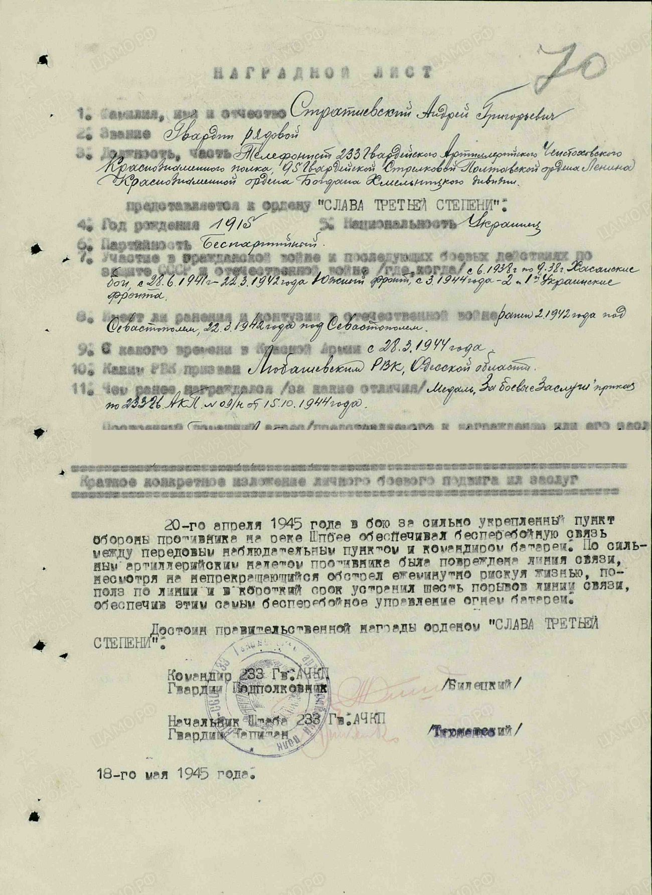
Нагородний лист до ордена Слави III ступеня. ЦАМО, ф. 33, оп. 690306.
Джерела: Подвиг народа 42169165; картотека нагороджень, запис 1007635120, місце народження «с. Гвоздавка 2». Родина підтверджує: це він, орден Слави й Севастополь у родині пам'ятають.
Прабабуся
роки невідомі
зі слів родини
Мотря Стратієвська, дівоче Попеску
Дружина Андрія Григоровича, мати Марії, бабуся тата Анатолія. Прізвище Попеску (Popescu) — одне з найпоширеніших румунських і молдавських. Разом із Короями й Дадулами це ще одна молдавська гілка роду.
Прапрадід
бл. 1880-х
документ
Григорій Стратієвський
Батько Андрія, відомий з по батькові в нагородних документах. Стратієвські жили і в Гвоздавці Другій, і в Ясеновому. Наприклад, Стратієвський Петро Іванович, 1901 р.н., з Ясенового; Андрій Павлович, 1921 р.н., з Гвоздавки Другої, помер від ран у 1941.
У метричній книзі Гвоздавки за 1911 рік (частина третя, смерті, зобр. 527, запис № 25) є запис про смерть: 20 березня 1911 року помер (похований 21-го) «Гвоздавського крестьянина Назарія Григорієва Стратієвського син Григорій», 2 роки, названий на честь діда — записаний як вихованець (приймак) Флентія Горновського. Сам запис причини не пояснює: найімовірніші версії — рання смерть матері (можливо, уродженої Горновської, тоді дитину забрали рідні по материній лінії), або тимчасова скрута в родині Назарія. версія За рік до цього, у метричній книзі за 1912 рік, є Назарій Григорович Стратієвський з дружиною Анною Данилівною: 27 березня 1912 року в них народився син Іларіон (запис № 44) — отже, після втрати первістка Григорія в родині народився новий син. За по батькові Назарій, найімовірніше, рідний брат прадіда Андрія Григоровича, а отже, син того самого Григорія. версія Там само записано Никона Васильовича Стратієвського й Наталію Луківну: 18 лютого 1912 року в них народилася дочка Агнія.
У книзі 1911 року є ще одна Стратієвська: Михайла Мажарова Стратієвська (тобто Михайлівна, донька Мажара Стратієвського) 2 лютого вийшла заміж у Гвоздавці (запис № 22). Поручителем на тому весіллі виступив Яків Сергійович Корой — ще одне свідчення, що Корої й Стратієвські в селі спілкувалися. Чи є Мажар Стратієвський родичем Григорія Стратієвського — поки що невідомо.
Народилася в 1937 році. Коли їй був рік, батько воював на Хасані, а в чотири роки знову пішов на фронт. Дитинство пройшло під окупацією. Вийшла заміж за Олексія Пачесного; їхні діти — Анатолій і Надія, заміжня Перхун.
Дід
1938
зі слів родини
Олексій Терентійович Пачесний
Народився в 1938 році. Чоловік Марії Андріївни, батько Анатолія й Надії. Родом із Гвоздавки Другої, як і батько. Син Терентія Івановича Пачесного та Віри Григорівни. Коли йому було три, батько потрапив в оточення й повернувся, а коли шість — його забрали на фронт удруге.
Прізвище Пачесний дуже рідкісне, і майже всі його носії у воєнних документах — з Гвоздавки:
Хто
Рік
Що відомо
Пачесний Яків Федотович
1906
Гвоздавка 2; дружина Ксенія Федорівна; був у полоні, звільнений; призваний Кривоозерським РВК у 95-ту гв. дивізію, ту саму, що й Андрій Стратієвський; зник безвісти у травні 1944 під Мельцем у Польщі
Пачесний Петро Іванович
1910
Гвоздавка 2; 118-та дивізія; потрапив у полон 13.08.1944 під Стопницею в Польщі (у картці полоненого помилково «Сталінград»); табір Слобозія
Пачесний Петро Лук'янович
1917
Гвоздавка; призваний на Алтаї у 1941, зник безвісти в грудні 1941
версія Петро Іванович (1910) за по батькові й віком може бути рідним братом Терентія Івановича, тобто дідовим дядьком. Батьки Терентія одружилися в січні 1909 року, тож син 1910-го міг бути їхнім первістком; запис про його народження в книзі 1910 року ще треба знайти.
Інші Пачесні в метричних книгах Гвоздавки.
1 листопада 1910 — шлюб Прокопія Васильовича Пачесного (записаний «Пачисный»), 20 років, і Агафії Василівни Диденкул, 23 (книга 1910, № 37).
5 червня 1912 — народився Омелян, син Стефана Васильовича Пачесного й Анни Михайлівни (книга 1912, № 79). Прокопій і Стефан Васильовичі, мабуть, брати.
17 березня 1912 — народився Лука, син Івана Гавриловича Пачесного і Євфросинії (книга 1912, № 45).
Отже, на початку XX століття в Гвоздавці жили щонайменше три гілки Пачесних: Матвійовичі (ваша), Васильовичі й Гавриловичі.
У 2025 році «Odessa Life» написала про родину Пачесних з Гвоздавської волості. Заможний селянин Гаврило Пачесний мав щонайменше сто десятин землі. Його садиба в переліку поселень Ананьївського повіту 1896 року записана як хутір Пачислаго, тобто хутір Пачесних. На початку XX століття в родині було десятеро синів. Батьки наділили кожного землею, і хутір виріс у село Володимирівку, що входить до Гвоздавської сільради.
У 1930-х Пачесних розкуркулили: забрали землю, худобу, хату й переселили на околицю. Вони вступили до колгоспу. Син Гаврила Петро очолив городницьку бригаду, грав на скрипці на весіллях, мав з дружиною Февронією дев'ятеро дітей. Навесні 1944-го Февронія тиждень ховала Петра й чотирьох сусідів у буряковій ямі від відступаючих німців. Їхній син Григорій Петрович (1918, с. Володимирівка) воював у складі 2-го Українського фронту й повернувся з орденами Червоної Зірки та Слави. У 1986-му він отримав ювілейний орден Вітчизняної війни II ступеня. Дочка Наталя (Кіріяк) у 2025 році, у 87 років, жила в Солтанівці.
версія Прізвище Пачесний у світі носять лише кілька десятків людей, і всі воєнні записи ведуть у Гвоздавку та Володимирівку. Дід Олексій — Терентійович, отже, син не Петра, а Терентія Івановича. Метрика 1912 року показала, що прапрадід — Іван Матвійович, тобто син Матвія, а не Гаврила. Тож Гаврило з хутора Пачислаго може бути хіба що батьком або братом Матвія; це ще треба перевірити за старішими книгами.
Батько діда Олексія Терентійовича; родина підтверджує, що це він. Єдиний Терентій Пачесний у воєнних базах — Терентій Іванович, 1912 року народження, з Гвоздавки Другої.
Знайдено запис про його народження. Метрична книга Архангело-Михайлівської церкви Гвоздавки за 1912 рік, частина перша, запис № 80: Терентій народився 31 травня, хрещений 10 червня 1912 року за старим стилем (13 і 23 червня за новим). Батьки: «Гвоздавскій крестьянинъ Іоаннъ Матвѣевъ Пачесный и законная жена его Любовь Лукова, оба православные». Хрещені: гвоздавські селяни Іоанн Васильович Диденкул і Марфа Кирилівна, дружина Івана Рублі. Хрестив священник Михаїл Бортовський, той самий, що хрестив Тимофія Короя й Анастасію Дадул.
Отже, прапрадід — Іван Матвійович Пачесний, прапрабабуся — Любов Луківна, а прапрапрадід — Матвій Пачесний.
Знайдено і запис про їхній шлюб. Метрична книга Гвоздавки за 1909 рік, частина друга, запис № 10: 19 січня 1909 року обвінчалися «Гвоздавскій крестьянинъ Іоаннъ Матвѣевъ Пачесный, православный, первымъ бракомъ», 21 рік, і «Гвоздавская крестьянка Любовь Лукова Рубля, православная, первымъ бракомъ», 26 років. Отже, Іван народився близько 1887–1888 року, а Любов — близько 1882–1883-го, і вона була на п'ять років старша за чоловіка. Дівоче прізвище прапрабабусі — Рубля, а її по батькові «Лукова», тобто Луківна, дає ім'я її батька: Лука Рубля, ваш прапрапрадід, народжений, імовірно, у 1850-х роках. Він стоїть у дереві над Любов'ю, так само як Матвій Пачесний над Іваном. Поручителі: гвоздавські селяни Василь Автономович Кир'як та Іоанн Васильович Диденкул; той самий Диденкул через три роки став хрещеним Терентія, а хрещеною — Марфа Кирилівна, дружина Івана Рублі, імовірно родича Любові. Вінчав священник Михаїл Бортовський.
Інші Рублі в Гвоздавці: у метричній книзі смертей за 1911 рік (зобр. 531, запис № 42) знайдено, що 25 травня 1911 року помер (похований 26-го) 4-річний «Гвоздавенскаго крестьянина Ісаака Євстафієва Рубли сынъ Іоаннъ» — отже, Ісаак Євстафійович Рубля вже мав родину в Гвоздавці до 1912 року. У 1912 році той самий Ісаак Євстафійович був хрещеним (книга 1912, зобр. 243), а в січні того ж року в Івана Антоновича Рублі народився син Володимир (зобр. 246). Чи вони родичі Любові Луківни, поки невідомо.
Хто такі поручителі. Перед вінчанням священник складав «обшук», тобто перевіряв, чи немає перешкод для шлюбу. Поручителі своїми підписами ручалися, що наречені не є близькими родичами, що жоден із них не одружений, що вони досягли потрібного віку й беруть шлюб з доброї волі. Зазвичай було двоє поручителів від нареченого й двоє від нареченої. Найчастіше це були родичі, хрещені або близькі друзі родини. Тому поручитель на чужому весіллі — ознака того, що людина була своєю для однієї з родин.
За п'ять днів до власного весілля, 14 січня 1909 року, Іван Матвійович був поручителем на шлюбі Андрія Івановича Карауша й Акилини Арсенівни Корой (запис № 7). Отже, він був близький або з родиною Караушів, або з Короями. Корої — теж рід із вашого дерева, але чи була Акилина родичкою прадіда Тимофія Короя, поки невідомо.
На тому ж розвороті, запис № 79, — Омелян, син гвоздавського селянина Стефана Васильовича Пачесного й Анни Михайлівни; а в березні того ж року, запис № 45, — Лука, син Івана Гавриловича Пачесного і Євфросинії. Це інші гілки роду: Іван Гаврилович — не ваш прапрадід, бо батько Терентія — Матвійович.
FamilySearch, мікрофільм 127941303 (Гвоздавка та сусідні парафії, 1912), зобр. 296–297, запис № 80; архівна адреса: ДАОО, ф. 911, оп. 1, спр. 20, арк. 149 зв.–150.
Воював двічі. У 1941 році він уже був в армії: у списку 1944 року в графі «находился в окружении, плену» стоїть 2.10.41 – 28.10.41. Це жовтневе оточення Південного фронту на Азовському узбережжі, коли частини 9-ї та 18-ї армій потрапили в «мішок» під Чернігівкою. За майже місяць він вибрався, дістався додому і решту окупації прожив у Гвоздавці. Колгоспник, безпартійний.
1 квітня 1944, через два дні після звільнення, Любашівський райвійськкомат призвав його знову, як Тимофія Короя та Андрія Стратієвського. 19 червня 1944-го він прибув у 214-й армійський запасний полк 5-ї гвардійської армії, той самий, де тоді був і Тимофій Корой, і з командою № 484 вибув у 9-ту гвардійську дивізію. Служив у 28-му гвардійському повітряно-десантному полку 9-ї гвардійської повітряно-десантної дивізії. Наказом по полку № 30/н від 17 вересня 1944 року нагороджений медаллю «За відвагу», а після війни — медаллю «За перемогу над Німеччиною». Тобто він повернувся з фронту живим. Самого нагородного листа в базі немає, лише картка обліку.
Його дружина, мати діда Олексія, — Віра Григорівна: у списку запасного полку 1944 року в графі «семейное положение» записано «ж. Вера Григоревна, там же», тобто в Гвоздавці. Її дівоче прізвище й роки життя ще не відомі; батька звали Григорій. Батьки Терентія — Іван Матвійович Пачесний і Любов Луківна, ваші прапрадід і прапрабабуся.
19.01.1909
шлюб батьків, Івана Матвійовича Пачесного й Любові Луківни Рублі
31.05.1912
народився в Гвоздавці; хрещений 10.06.1912 (ст. ст.)
1938
народився син Олексій
2.10 – 28.10.1941
в оточенні на Південному фронті; повернувся додому
01.04.1944
призваний Любашівським РВК
19.06.1944
214 армійський запасний полк 5 гв. армії, далі 9 гв. повітряно-десантна дивізія, 28 гв. полк
17.09.1944
медаль «За відвагу», наказ № 30/н
09.05.1945
медаль «За перемогу над Німеччиною»
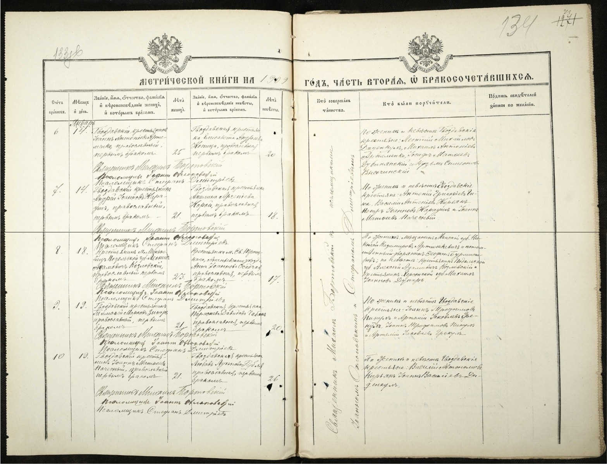
Метрична книга Гвоздавки 1909 року, частина друга, розворот із шлюбами № 6–10. № 10 унизу: Іоанн Матвійович Пачесний, 21, і Любов Луківна Рубля, 26; праворуч поручителі. У записі № 7 серед поручителів — сам Іоанн Матвійович. FamilySearch, мікрофільм 127453543, зобр. 136.
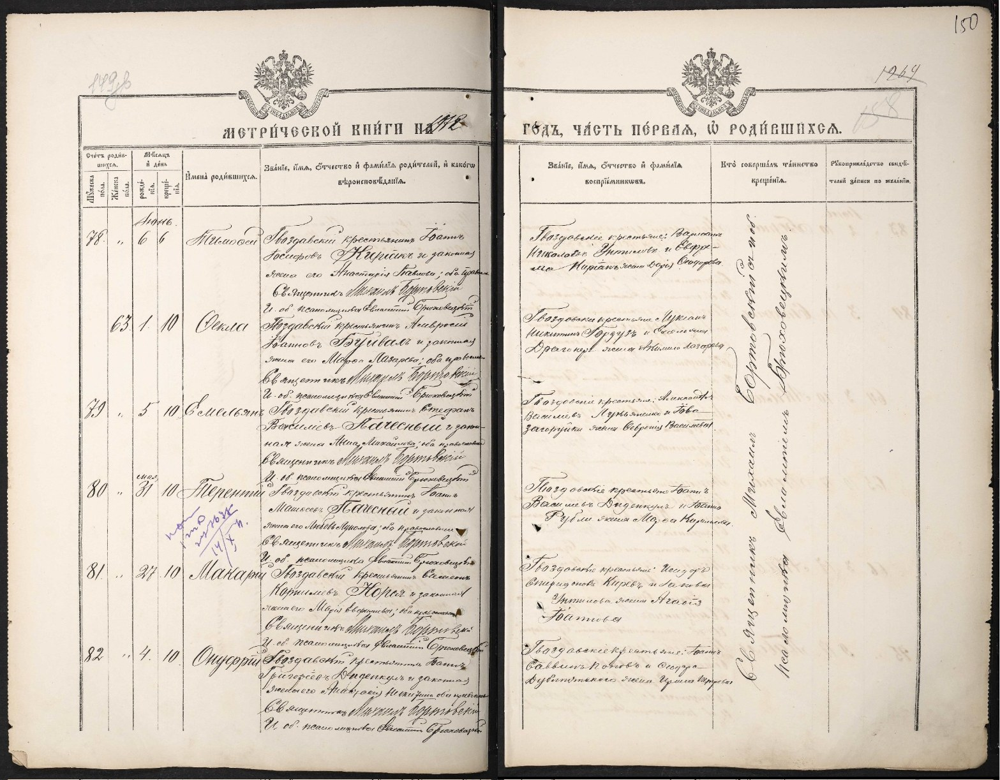
Метрична книга Гвоздавки 1912 року, розворот із записами № 78–82. Терентій — № 80: батьки Іоанн Матвійович Пачесний і Любов Луківна; праворуч хрещені. FamilySearch, мікрофільм 127941303, зобр. 296–297.
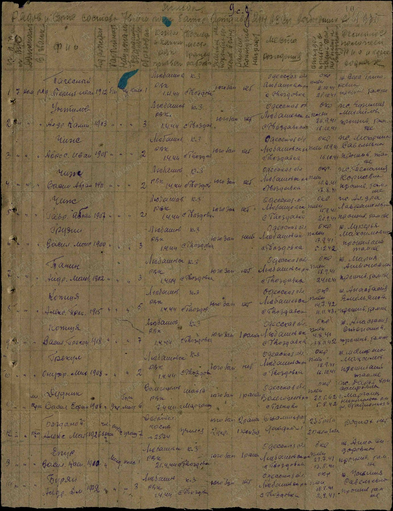
Список поповнення 214-го запасного полку, червень 1944 року. Рядок 1: Терентій, оточення 2.10–28.10.41, «ж. Вера Григоревна». ЦАМО, ф. 8510, оп. 165430с, спр. 14. Знайшов ChatGPT, перевірено за оригіналом.
Народився в 1959 році в селі Ясенове Любашівського району, сусідньому з Гвоздавкою. У 1983 році одружився з Надією Спінатій. Має сестру Надію, заміжню Перхун.
Діти
Володимир і Ольга
Володимир Анатолійович народився в 1985 році, Ольга Анатоліївна — у 1987-му в Кишиневі. Точні дати живих на цій публічній сторінці не наводяться.
Звідки рід
Гвоздавка Друга і Ясенове
Гвоздавка Друга стоїть на правому березі Кодими, за 17 км від Любашівки. Село засноване в 1796 році. До 1917 року воно було центром Гвоздавської волості Ананьївського повіту Херсонської губернії й мало Архангело-Михайлівську церкву, збудовану в 1874 році. Жителів правобережної Гвоздавки називали «молдаванами», лівобережної Першої — «ляхами». Навіть за переписом 2001 року 5% жителів говорили молдовською. Звідси й прізвища Корой, Дадул, Попеску.
Ясенове, де народився тато, лежить поруч. Його Покровська церква й книги народжень теж збереглися в одеському архіві. Серед 449 нагороджених уродженців Ясенового у базі «Подвиг народа» жодного Пачесного, Стратієвського чи Спінатія немає: наші родини воювали як гвоздавці.
Одна армія на чотирьох. Навесні 1944 року через Любашівщину проходила 5-та гвардійська армія, і всіх чоловіків з родини мобілізували саме в неї: Андрій Стратієвський у 95-ту гвардійську дивізію, Терентій Пачесний у 9-ту гвардійську повітряно-десантну, Аким Бабенко в 13-ту гвардійську (усі три — 33-й гвардійський корпус), Тимофій Корой у 78-му гвардійську. Разом вони пройшли Сандомирський плацдарм, Одер і Сілезію. Двоє загинули в лютому 1945-го під Бреслау, двоє дійшли до Шпрее й Ельби.
1796
засновано село Гвоздавку
1874
збудовано Архангело-Михайлівську церкву
1932–1933
Голодомор: у селі загинуло щонайменше 13 людей
4.08.1941
німецькі й румунські війська зайняли Любашівку
1941–1944
румунська окупація: губернаторство «Трансністрія», Голтський повіт. Селом керує примарія
листопад 1941
табір для євреїв біля села; близько 5 тисяч загиблих
Скани з Центрального архіву Міноборони (ЦАМО), отримані через бази ОБД «Мемориал» і «Подвиг народа», та метричні книги Гвоздавки з Держархіву Одеської області, оцифровані FamilySearch. Аркуші метричних книг подано повністю, у тій якості, в якій їх оцифрував архів.
Андрій Дадул, 1910. Метрична книга Гвоздавки, частина перша, запис № 84: народився 19 серпня, хрещений 5 вересня 1910 року; батьки Ісидор Данилович Дадул і Васса Никифорівна; хрещені Григорій Іванович Охлоповський і Параскева Митрофанська. FamilySearch, мікрофільм 127941304, зобр. 199–200.Іван Пачесний і Любов Рубля, 1909. Метрична книга Гвоздавки, частина друга, запис № 10: шлюб 19 січня 1909 року; наречений Іоанн Матвійович Пачесний, 21 рік, наречена Любов Луківна Рубля, 26 років; поручителі Василь Автономович Кир'як та Іоанн Васильович Диденкул. FamilySearch, мікрофільм 127453543, зобр. 136.Терентій Пачесний, 1912. Метрична книга Архангело-Михайлівської церкви Гвоздавки, частина перша, запис № 80: народився 31 травня, хрещений 10 червня 1912 року; батьки Іоанн Матвійович Пачесний і Любов Луківна; хрещені Іоанн Васильович Диденкул і Марфа Кирилівна Рубля. FamilySearch, мікрофільм 127941303, зобр. 296–297.
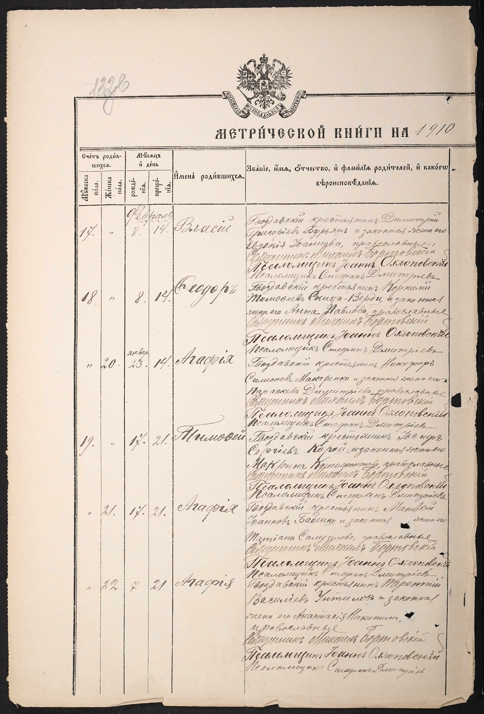
Тимофій Корой, 1910. Метрична книга Архангело-Михайлівської церкви Гвоздавки, частина перша, запис № 19: народився 17, хрещений 21 лютого 1910 року; батьки Йосип Сергійович Корой і Макрина Ксенофонтівна. FamilySearch, мікрофільм 127941304, зобр. 153.
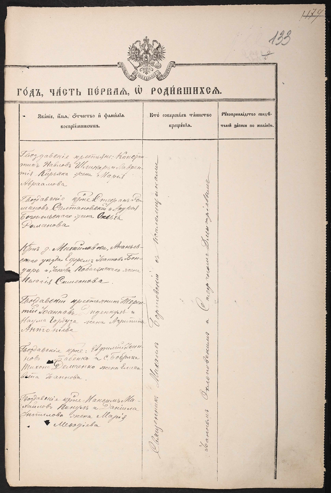
Той самий запис, правий аркуш. Хрещені Тимофія — четверті зверху: Терентій Іванович Диденкул та Агрипина Антонівна, дружина Наума Гордуза. Зобр. 154.
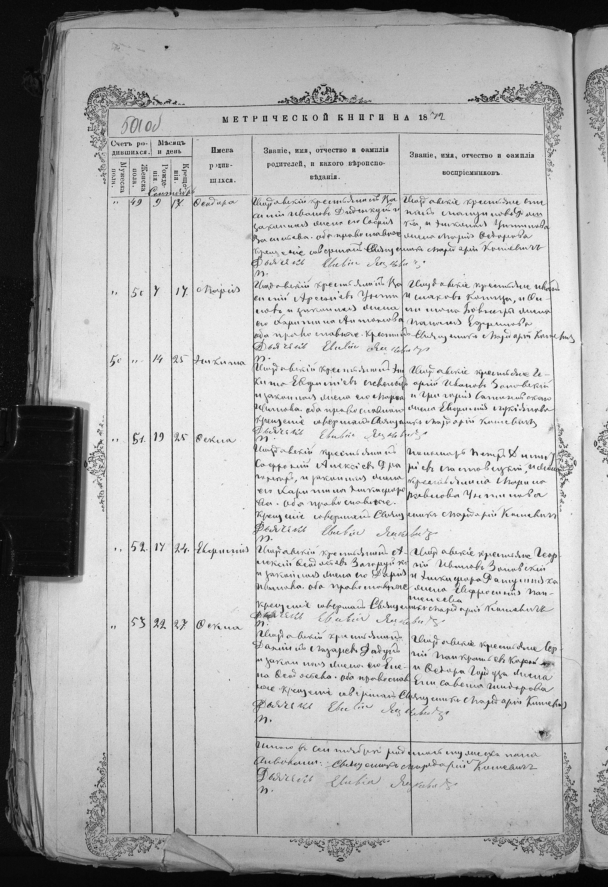
Фекла Дадул, 1872. Метрична книга Гвоздавки Другої, запис № 53: народилася 22 вересня 1872 року, батьки Данило Лазарович Дадул та Олена Феодосіївна. Повний аркуш із FamilySearch, мікрофільм 005678444, зобр. 63.
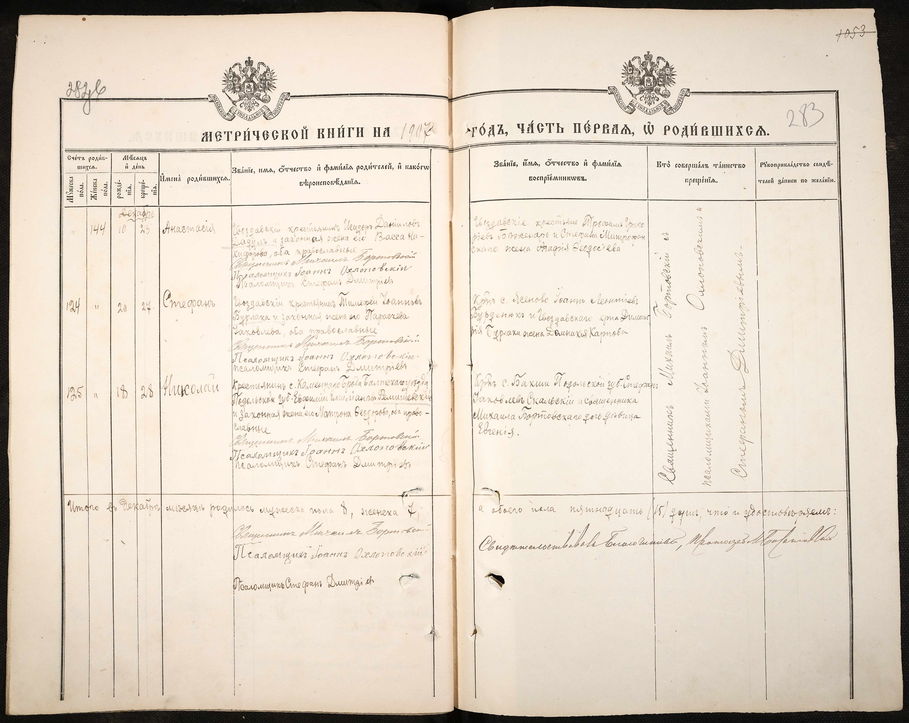
Анастасія Дадул, 1907. Метрична книга Архангело-Михайлівської церкви Гвоздавки (ДАОО, ф. 911, оп. 1, спр. 13), частина перша, запис № 144: народилася 10 грудня, хрещена 25 грудня 1907 року за старим стилем; батьки Ісидор Данилович Дадул і Васса Никифорівна. Повний аркуш із FamilySearch, мікрофільм 127453541, зобр. 290.
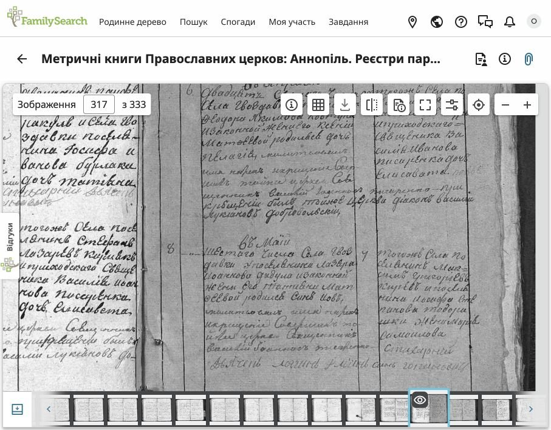
Іов Дадул, 1835. Метрична книга села Гвоздавки (тоді Балтського повіту), запис № 8: «Въ маіи шестаго числа села Гвоздавки поселянина Лазаря Іоаннова Дадула и законной жены его Татіяны Матфеевой родился сынъ Іовъ». Найдавніший документ роду. FamilySearch, мікрофільм 005685463, зобр. 317; знімок зробив ChatGPT.
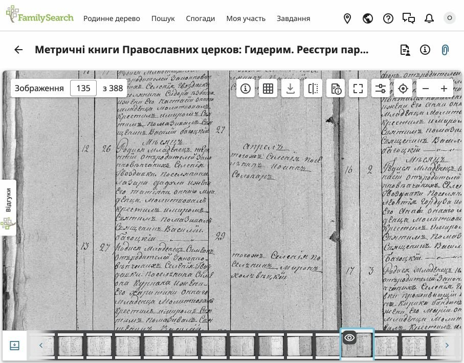
Терентій Дадул, 1828. Народився 26 квітня 1828 року, батьки Лазар Дадул і Тетяна. FamilySearch, мікрофільм 005685006, зобр. 135; знімок зробив ChatGPT.Тимофій Корой. Іменний список безповоротних втрат 228-го гв. стрілецького полку, 27.02.1945, рядок 28: «жена Корой Анастасия Сидоровна, с. Гвоздавка 2». ЦАМО, ф. 58, оп. 18003, спр. 340.Андрій Стратієвський. Нагородний лист до ордена Слави III ступеня, 18.05.1945, з описом подвигу на Шпрее і всього бойового шляху від Хасану. ЦАМО, ф. 33, оп. 690306.Степан Спінатій. Список Любашівського райвійськкомату від 15.09.1951 про зниклих безвісти, рядок 5: мати — Агрипина Устинівна Спінатій. ЦАМО, ф. 58, оп. 977524, спр. 260.Терентій Пачесний. Список рядового складу, що прибув у 214-й запасний полк 5-ї гв. армії, червень 1944, рядок 1: 1912, колгоспник, призваний 1.04.1944, оточення 2.10–28.10.1941, дружина Віра Григорівна, Гвоздовка. ЦАМО, ф. 8510, оп. 165430с, спр. 14.
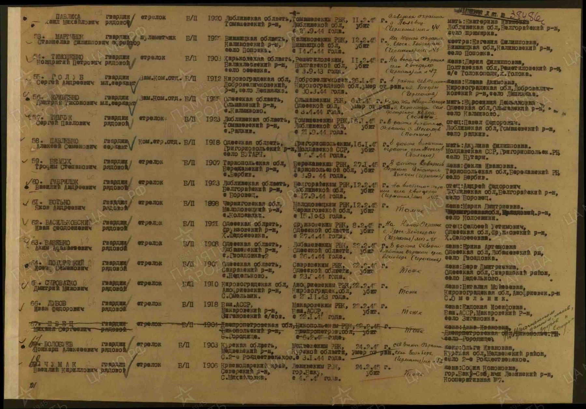
Аким Бабенко. Донесення 13-ї гв. стрілецької дивізії, рядок 63: Бабенко Аким Опанасович, 1908, Гвоздавка 2, призваний 26.04.1944, убитий 22.02.1945 біля с. Вейнберг; дружина Ірина Артемівна. ЦАМО, ф. 58, оп. 18003, спр. 328.
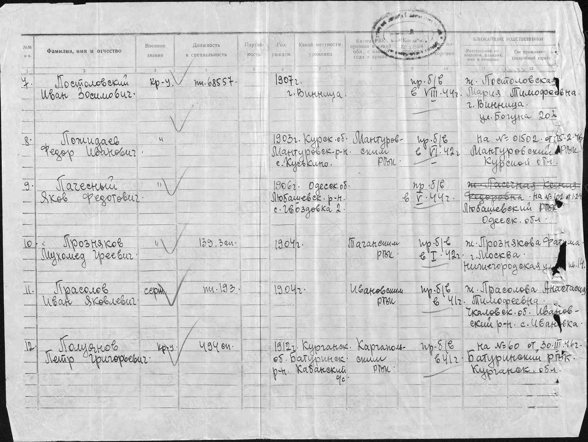
Яків Пачесний. Список тих, кого вважати зниклими безвісти, рядок 9: Пачесний Яків Федотович, 1906, Гвоздавка 2, зник у травні 1944; дружина Ксенія Федорівна (закреслено). ЦАМО, ф. 58, оп. 18004, спр. 1773.
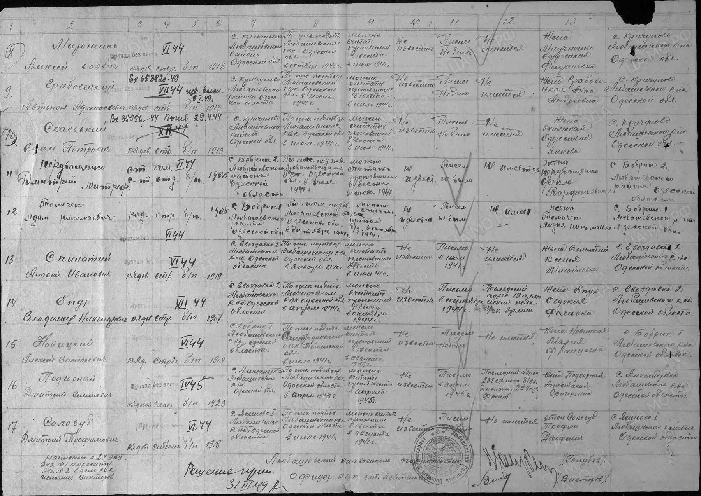
Андрій Спінатій. Список Любашівського РВК, рішення від 31.03.1949, рядок 13: Спінатій Андрій Іванович, 1919, Гвоздавка 2, призваний у січні 1940, останній лист у липні 1941; дружина Ксенія Михайлівна. ЦАМО, ф. 58, оп. 977522, спр. 145.
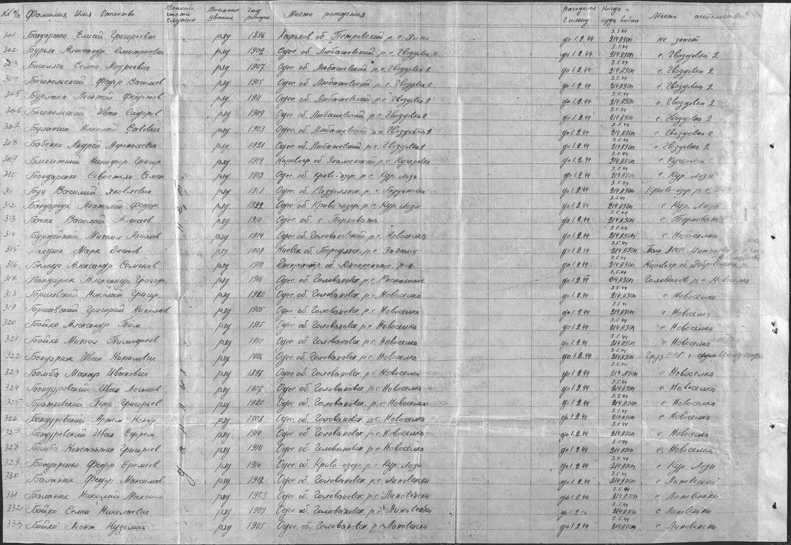
Односельці, що повернулися з полону. Список звільнених з полону, направлених 3.05.1944 у 214-й запасний полк, той самий, куди потрапив Тимофій Корой. Рядки 302–308: Бур'ян, Бишляга, Богопольський Федір, Бурлака, Богопольський Іван Сидорович, Буланий, Бабенко Андрій Афанасійович, усі з Гвоздавки 2. ЦАМО, ф. 58, оп. 18003, спр. 1478.
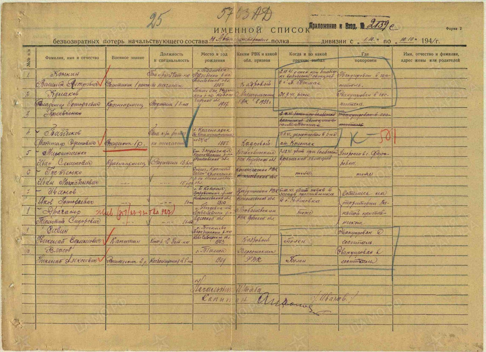
Терентій Драганер. Іменний список втрат 31-го автотранспортного полку 9-ї армії, 1–10 жовтня 1941, рядок 8: Драганер Терентій Сидорович, Гвоздавка 2, «остался на территории, занятой противником»; пізніше дописано «жив». ЦАМО, ф. 58, оп. 818884, спр. 64.
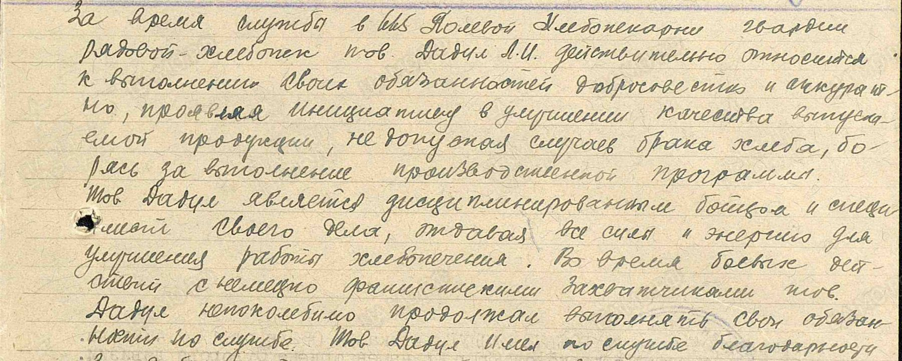
Леонтій Дадул. Фрагмент нагородного листа до медалі «За бойові заслуги»: хлібопек 665-ї польової хлібопекарні 81-ї гв. дивізії, «дисциплинированный боец и специалист своего дела». Єдиний Дадул серед нагороджених; зв'язок із прабабусею Анастасією Дадул не встановлений. ЦАМО, ф. 33, оп. 687572.
Що шукати далі
Де лежать наступні покоління
Держархів Одеської області
Метричні книги 1893–1916
Гвоздавка й Ясенове, ф. 911, оп. 1. Народження Тимофія Короя 1910 року — спр. 17 (знайдено, див. вище), Анастасії Дадул 1907 — спр. 13 (знайдено), Терентія Пачесного 1912 — спр. 20 (знайдено); хрещення Ісидора Дадула 1881 — ф. 37, оп. 10, спр. 27. Частину цих книг уже можна читати на FamilySearch: книги фонду 911 за 1907 (спр. 13) і 1908 (спр. 14) роки там є як мікрофільми 127453541 і 127453558; решту треба перевіряти. На FamilySearch є й пізніші книги цієї серії: 1909 — мікрофільм 127453543, 1910 — 127941304, 1911 — 127453556 (знайдено), 1912 — 127941303, 1916 — 127941296. 1901 — 127453542, 1905 — 127453554 (знайдено за офіційним каталогом ДАОО, справи 7 і 12 фонду 911; рік 1913, попри наявність у архіві (спр. 21), на FamilySearch не оцифровано — перевірено пошуком за ключем «911_1_21»). Мікрофільми 127941299, 127941301, 127941300 (підписані як 1913–1915) — інші парафії, Гвоздавки в них немає. Метод пошуку: офіційний «Зведений каталог метричних книг» Держархіву Одеської області (archive.od.gov.ua) дає точні номери фонду/опису/справи для кожного року й села; за ключовим словом виду «911_1_7» у розділі FamilySearch «Снимки → Ключевое слово» знаходиться потрібна цифрова книга напряму, без ручного перебору мікрофільмів. Той самий метод відкрив книги сусіднього Ясенового (Покровська церква): 1902/1905/1907/1908 — 911_1_9 (DGS 127453555), 1906 — 904_1_31 (DGS 124357203), 1909 — 911_1_16 (DGS 127453557), 1912–1921 (вибірково) — 911_1_19 (DGS 127453560). У метричній книзі шлюбів Ясенового за 1909 рік (запис № 3, 18 січня) свідком нареченого був Олександр Харитонович Корой — ще одна, поки не пов'язана гілка роду, цього разу з Ясенового. Готовий текст запиту до архіву — лишилося вписати адресу й додати копії свідоцтв.
Держархів Одеської області
Примарії 1941–1944
Списки жителів часів окупації: Гвоздавка Друга Р-2665, Ясенове Друге Р-2666, Ясенове Перше Р-2667, претура району Р-2383.
ДРАЦС
Записи про шлюб 1930-х
Шлюб Тимофія Короя й Анастасії Дадул, шлюби Пачесних і Спінатіїв. Там записані дівочі прізвища й батьки.
Родина
Чого бракує
Обставини розстрілу Сидора Дадула; які саме хутори під Ананьєвом, звідки дід Іван; офіційне ім'я Калини Бабенко (чи справді Агрипина Устинівна); імена Настуні й Міші з прізвищами за шлюбом; дівоче прізвище й роки життя прабабусі Віри Пачесної; де саме «хутори» під Ананьєвом.